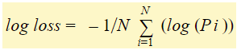
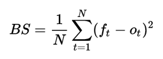
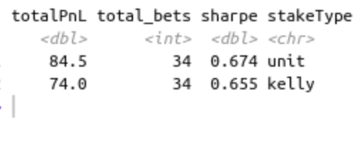
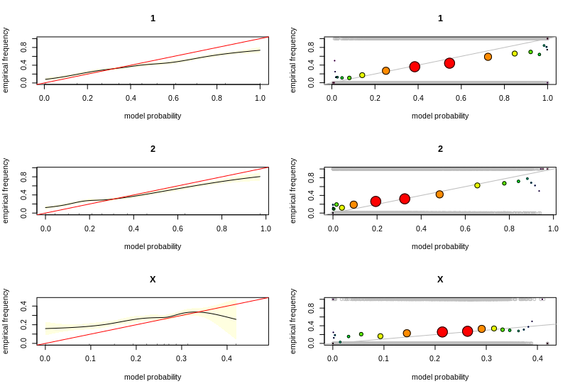
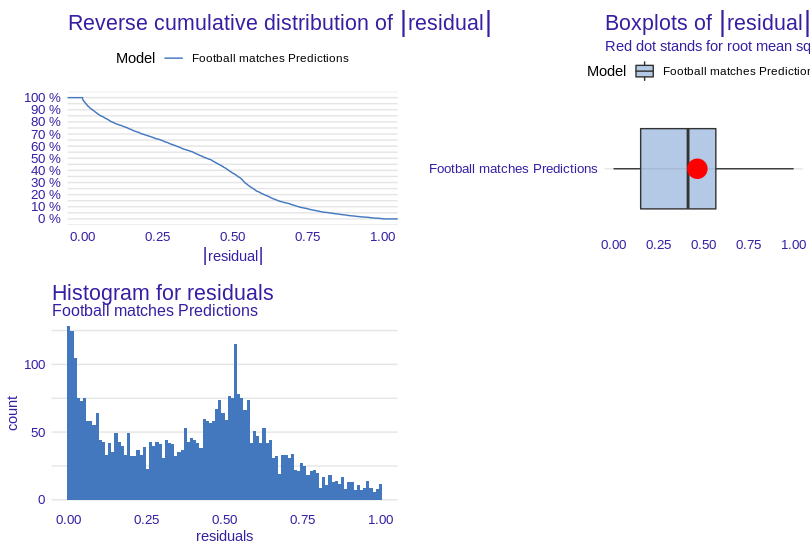

Model Evaluation
Model Evaluation¶
Access the true performance of a model is key in its validation step. It allows the modeller to anticipate the capacity of the model to generalise and keep similar predictive power to what has been observed in the training/validation phase.
Predicting the outcome of a football game is no exception and usually the same step used when validating any classification model can be followed.
Having said that, predicting the outcome of a football game has 2 particular aspects:
Existence of a solid Benchmark producing prediction: the betting market
Predictions can be used in a direct investment strategy where economical outcome can be simulated/observed
Because accuracy and precision may not always indicate model capability, there are alternative more effective criteria for measuring model performance for our purpose. In this regard, we have created a R package that will enable us to set up the following metrics:
Log loss:
For each occurrence, log loss is the negative average of the log of corrected estimated probabilities. It considers the predictability of the result. Each estimated probability is compared to the actual class output value (0 or 1), and a score is computed that penalizes the probability based on the difference between the expected and actual values. The penalty is logarithmic, with a low score for little variations (0.1 or 0.2) and a high score for major differences. Brier Score:
It is an evaluation metric that is used to check the goodness of a predicted probability score. It is very similar to the mean squared error, but it is only applied to prediction probability scores with values ranging from 0 to 1. It is also similar to the log-loss evaluation metric, but the only difference is that it is gentler in penalizing inaccurate predictions than log loss. The best has a score of 0.0, while the worst has a value of 1.0. Tailored scoring rules:
The key notion is that getting a higher score than your benchmark isn’t enough (market). You must outperform it by a comfortable margin that allows you to benefit. To put it another way, we’re comparing model forecasts to those of bookies. \(\large -log(p_k \times o_k)\) with pk is the model proba and o_k is the associated odd for the 1X2 market.
For asian handicap line, the situation is more complicated. In fact, depending on the type of line, the outcome is not always a simple binary: it could be one of (full win, half win, money back, half loss or loss). Therefore, the suggested solution is to compute the profit and Loss of the even line (the closest one to 50/50 or 2.0 odds) and use it as a proxy to judge if the model is more often on the right side.If the score is larger than zero, our model surpasses the bookies’ system; otherwise, it is comparable to or worse than it.
Trading simulation strategy :
We provide the necessary investment instruments for evaluating our model’s success. To that end, we provide functions for calculating the amount invested each transaction as well as the projected return on each transaction. So to calculate each time the amount invested, ie how much to bet each time, this is possible through the kelly formula.
Kelly is a math formula that recommends or determines how much money to bet in a lottery, if the investor is looking to maximize the growth rate of their long-term budget.In other words, kelly recommends maximizing the expectation of the logarithm of the gain.
The Kelly criterion is given by: \(\large f = \frac{(b \times p - q)}{b}\) , b = odds -1, p = probability, q = probability of losing = 1 - p .
The result obtained is the percentage that the bettor can invest from his budget. if the result is negative ie kelly recommends not to play.
Once the kelly’s fraction is calculated, it is easy to calculate the expected return.The expected return is simply what we expect to make on each transaction and it would be: \(\large invested_f \times (p \times b)\) , invested_f = invested money , p = model probability , b = odds - 1.
These prior calculations are not valid for the Asian handicap market, unlike the 1X2 market(bet on home win or away win or draw); It must be changed for integer and quarter lines. If we utilise them as they are, we will impose a bias. First of all, Asian handicap is a betting method that originated in Asia and is most commonly employed in football. A handicap indicates that one team has a virtual advantage over the other. Asian handicaps remove the possibility of a draw in a match, leaving just two potential results.Morevover,the favourite team, which has a handicap disadvantage, is denoted by a negative sign (-). A plus symbol (+) is provided to the underdog team, indicating that they have a handicap advantage.
Asian handicap has different lines and can be classified into 3 types:Half integer lines: It is relate to a binary outcome. The bet is either a win or a loss.
the kelly formula for this line is the same as the one used for 1X2 market , we just need to take the goal probability that is strictly greater than - goal difference value.
For example , if we are interested in 0.5 line , the proba implied by the model for the home win is \(Pr(GoalDifference > -0.5)\).Integer lines: With this handicap, we may add or deduct goals from a team’s final score. When the handicap is applied to the final result and you receive a tie, your bet is reimbursed.The kelly formula for this line has to be changed :
\(\large \large f = \frac{(b \times pr_{+} - pr_{-})}{b (pr_{++} + pr_{-})}\), with : \(pr_{++} = Pr(GoalDifference > h)\), \(pr_{-+} = Pr(GoalDifference < h)\) , b = 1 - odds.
And the Expected Return is : \( (odds - 1) * Pr(GD > h) - Pr(GD < h)\)Quarter lines : A quarter integer splits your bet 50:50 between the 2 handicap lines above and below the offered price. A -0.75 handicap is actually 2 handicaps for the price of one with half of your bet being placed at -0.5 and the remainder at -1, with both bets receiving the same odds.The implication of this is that the possible outcomes are win (full stake), half win, half loss or full loss.
Negative Quarter(-0.25) and Positive third Quarter(+0.75):
The kelly formula here will be giving by solving this quadratic equation: \(0.5 b (pr_{+} + pr_{-} - pr_{}) f^2 + (pr_{-}(0.5 - b) - 0.5 pr_{}(b-1) -1.5 pr_{+} b) f + pr_{+}b -0.5 pr_{} - pr_{-} = 0\)Positve Quarter(+0.25) and Negative third Quarter(-0.75):
the kelly formula here will be giving by solving this quadratic equation: \(0.5 (odds - 1) \times (2 - odds) * (pr_{+} + pr_{} + pr_{-}) f^2 + (0.5 pr_{} (odds - 1) (odds - 2) + pr_{+} (odds - 1) (0.5 \times odds - 2) + pr_{-} (2 - 1.5 odds)) f + 0.5 pr_{} (odds - 2) + pr_{+} (odds - 1) - pr_{-} = 0\)The expected return for the quarter lines is given by : \((odds - 1) * P_{win} + 0.5 * \Big( (1/P - 1) * P_{half_win} - P_{half_lose} \Big) -P_{lose}\)
We have to note that we have considered 2 investment schemes: unit betting where the punter simply invest a unit of his wealth whenever he spots an opportunity. The second strategy is based on the Kelly criterion and takes into account the model probability and market odds.

Calibration Plot:
In general, we anticipate the class value that has the best probability of being the true class label for any classification task. However, there are situations when we need to estimate the likelihood of a data instance belonging to each class label. It can assist us assess how decisive a classification model is and grasp how’sure’ a model is when predicting a class label.The ideal calibrated model’s curve is a linear straight line traveling linearly from (0, 0).
Residual diagnosis:
It is the discrepancy between the observed and estimated values. They’re a diagnostic tool for evaluating the quality of a model. It aids in the visualization of errors distribution.we display 3 types of graphs (ecdf plot, boxplot and histogram) which are used to visualize the distribution of the absolute values of residuals.
